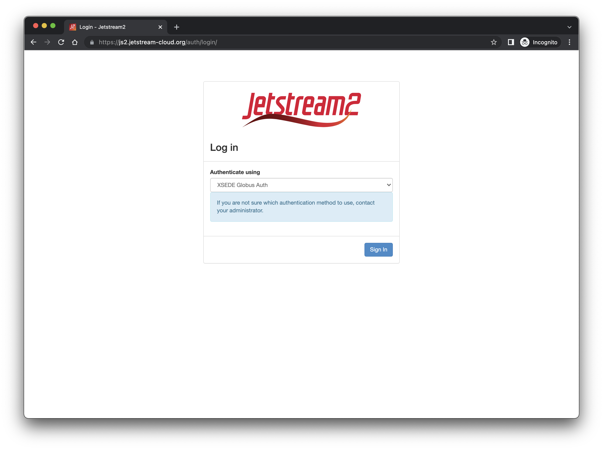
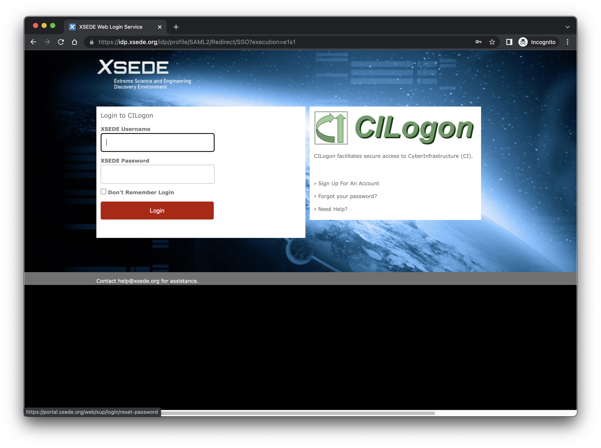
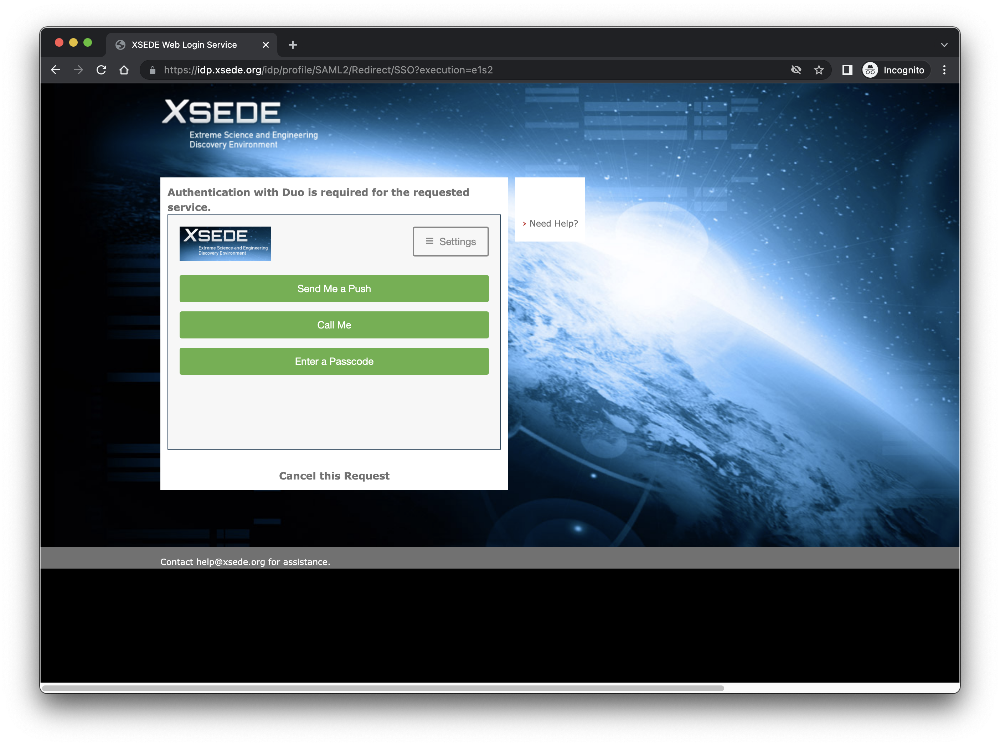
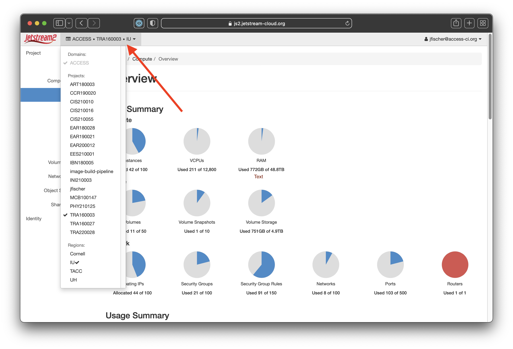

Horizon¶
Horizon is a web-based GUI for interacting with the Openstack API. It is likely the most complete GUI for working with Openstack but isn’t the fastest or most user-friendly. Almost all functionality that is available from the CLI is available in Horizon. Exosphere and Cacao both provide subsets of Horizon functionality with more focus on ease of use.
That said, there are times you may need the more complete features of Horizon instead of the other GUI interfaces. This documentation will cover the basics of launching, using, and managing instances, using various storage options in Horizon, using container orchestration engines, and other aspects of using Openstack.
Logging into horizon¶
| Action | Screenshot |
|---|---|
| Navigate to https://js2.jetstream-cloud.org Make sure it says "XSEDE Globus Auth" in the Authenticate Using box. |
 |
| The first time you log in you'll be directed to a Globus page to permit authorization.
If you have linked institutional, Google, Orcid, or other credentials, you'll be able to use those to authenticate. We know XSEDE credentials work correctly so we will show that in our example.
|

|
| The next page should be the login screen for your credentials. We're showing the XSEDE login screen as our example. |  |
| If you're using two-factor auth with your credentials as XSEDE does, you'll likely get a Duo or Authenticator screen here. |  |
| You should be at the Horizon Dashboard home now. | 
|
| If you are on multiple XSEDE allocations, you'll want to verify you're using the correct one and change to the correct one if you are not. You do that by clicking at the top left next to the Jetstream2 logo where it has "XSEDE * TG-XXXXXXXXX * IU". That will show allocations under "Projects". |
 |